Usinage numérique & traditionnel
Tournage CNC, fraisage 3 axes et 5 axes continu, tournage de haute précision sur Schaublin. Une flexibilité totale, de l'unitaire à la série.

La garantie d'une réponse précise
Usinage numérique & traditionnel · Contrôle qualité · Solutions sur mesure — Besançon, France.
🟢 Micronora 2026 · Hall B1 · Stand 503Basée à Besançon, au cœur du bassin historique de la mécanique de précision, LIP Industrie Précision conçoit et fabrique des pièces techniques de haute précision. De la pièce unitaire à la petite série, nous mettons notre parc machine et notre savoir-faire au service de vos projets les plus complexes — avec réactivité, rigueur et un contrôle qualité sans compromis.
Tournage CNC, fraisage 3 axes et 5 axes continu, tournage de haute précision sur Schaublin. Une flexibilité totale, de l'unitaire à la série.
Électro-érosion à fil et par enfonçage, rectification plane, cylindrique et centerless, dépôt ESD carbure. Les finitions les plus fines et les géométries les plus délicates.
Mesure tridimensionnelle (MMT) et contrôle optique par caméra OGP. Chaque pièce est vérifiée pour garantir des tolérances au micron.
Des pièces fiables pour des environnements sans droit à l'erreur.
Exigence extrême, traçabilité et robustesse pour les applications les plus critiques.
Micro-mécanique et finitions parfaites au service de la haute précision.
Une réponse rapide à vos demandes de chiffrage.
Des engagements tenus, planning après planning.
De la pièce unitaire à la série, on s'adapte à votre besoin.
Un contrôle rigoureux à chaque étape de la fabrication.
Rencontrons-nous sur notre stand, ou emportez notre carte de visite.
La garantie d'une réponse précise
🟢 Retrouvez-nous à Micronora 2026 · Hall B1 · Stand 503